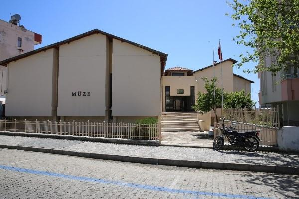

|  |
Anemurium antik kentinde Amerikalı ve Kanadalı bilim adamları tarafından 1960 yılında başlatılan bilimsel arkeolojik kazılar yöredeki tüm kültürel kalıntıların değerlendirilmesi amacıyla, Anamur İlçesi'ne bir müze yapılması fikrini ortaya çıkarmıştır. Müze binasının ilk temeli 1976 yılında Yalıevleri Mahallesi'nde tahsis edilen 2630 m²lik arsa üzerine atılmıştır. 1990 yılında inşaat işlemlerinin tamamlanmasından sonra 1992 yılında teşhir ve tanzim çalışmaları sonuçlandırılmıştır. Bu zamana kadar sağlıklı bir müze binasının olmaması nedeniyle; Anemurium kazılarında ortaya çıkarılan eserler Alanya Müzesi'nde, ilçe çevresinde ele geçen diğer eserler ise Silifke Müzesi'nde korunmuştur. 1984 yılında Anamur Müzesi'ne kadro tahsisi ile personel sağlanmış ve müze Atatürk Bulvarı üzerinde kiralık bir dükkanda hizmet vermeye başlamıştır.
Müze bu arada kendini tanıtmaya çalışmış, Bakanlık ve imkanların birleştirilmesiyle Anamur ve çevresinde kültür ve tabiat varlıklarının tespit çalışmalarını sürdürmüş, 1985 ve 1986 yılları Bozyazı (Nagidos) nekropolü ve Mamure Kalesi içindeki Rig Manoi antik kenti kalıntılarında kurtarma kazısı çalışmaları gerçekleştirilmiştir. Önce Amerika ve Kanada'nın ortaklaşa başlattığı Anemurium kenti arkeolojik kazıları, daha sonra Kanadalı Prof. Dr. James Russel başkanlığında sürdürülmüştür. 1986 yılından itibaren ise Kültür Bakanlığı adına Anamur Müzesi Müdürlüğü'nün başkanlığında Selçuk Üniversitesi Öğretim Üyesi Doç. Dr. Levent Zoroğlu'nun bilimsel sorumluluğunda Aydıncık (Kelenderis) kazıları başlatılmıştır. Alanya ve Silifke müzelerinden getirilen Anamur kaynaklı eserlerin yanı sıra Bakanlıkça kapatılan Erdemli Müzesi'nden getirilen eserler ve Anamur halkının büyük bir duyarlılıkla getirdiği eserlerin sayısı bugün 7000 adete yaklaşmıştır.
Müze binasının üst katında idari odalar, kütüphane, fotoğrafhane, konferans salonu, alt katında ise kafeterya, etnografik ve arkeolojik seksiyonlar, eski eser depoları, ve laboratuvar yer almaktadır. Konferans salonunda eski eser kaçakçılığının önlenmesine yönelik eğitici nitelikte dia gösterileriyle, resim, heykel, fotoğraf vb. gibi sergiler düzenlenmektedir. Etnografik seksiyonda geleneksel sanatlarımızın en güzel örnekleri yer almaktadır. Göçebelik döneminden yerleşik düzene geçinceye kadarki tarihsel süreç içerisinde ele geçirilen folklorik eşyalar sergilenmektedir.
|